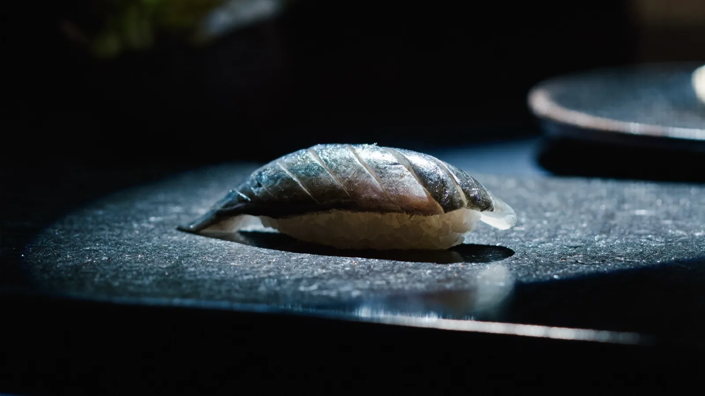
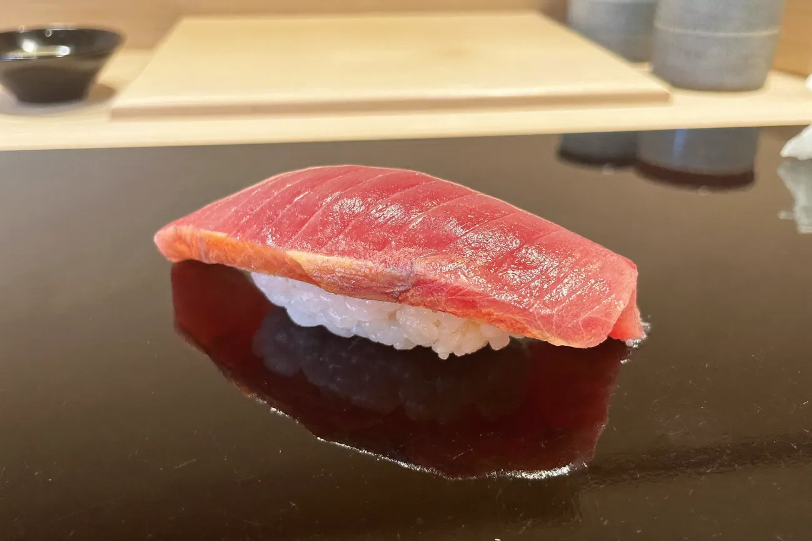
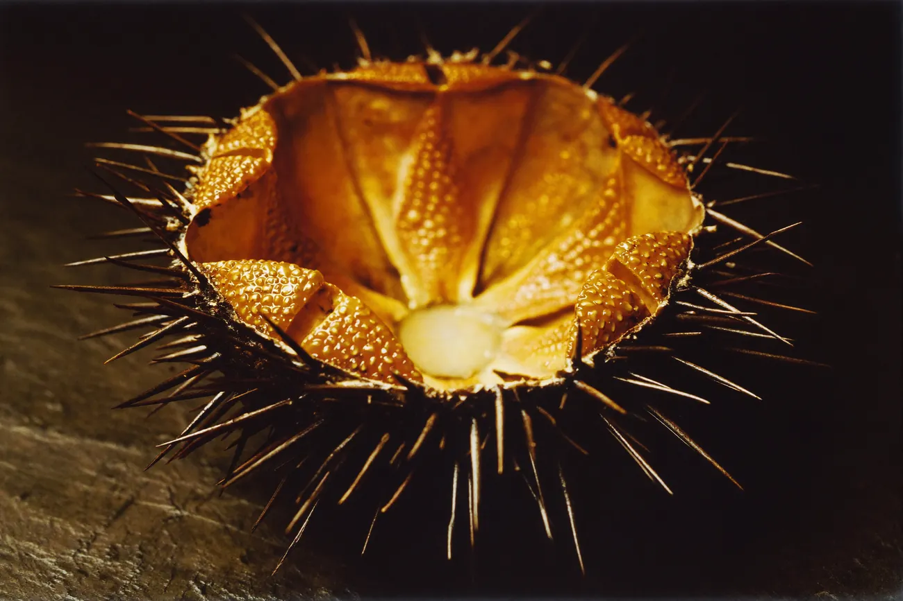
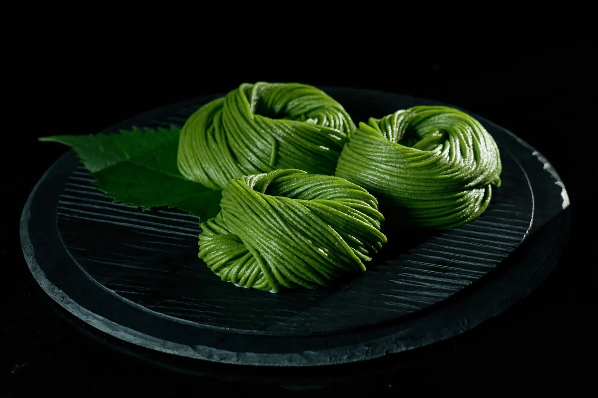
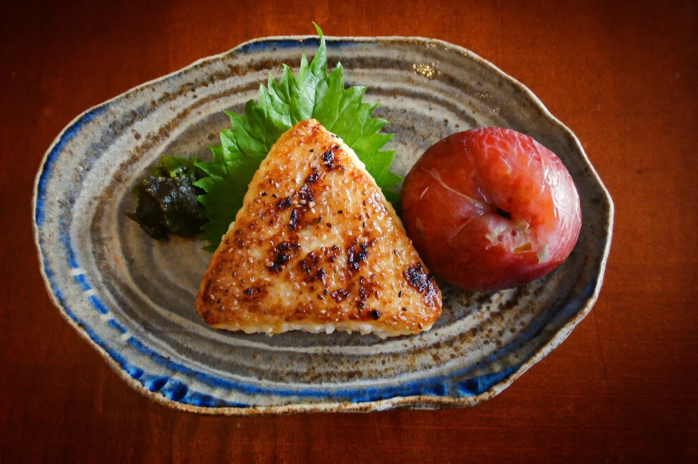
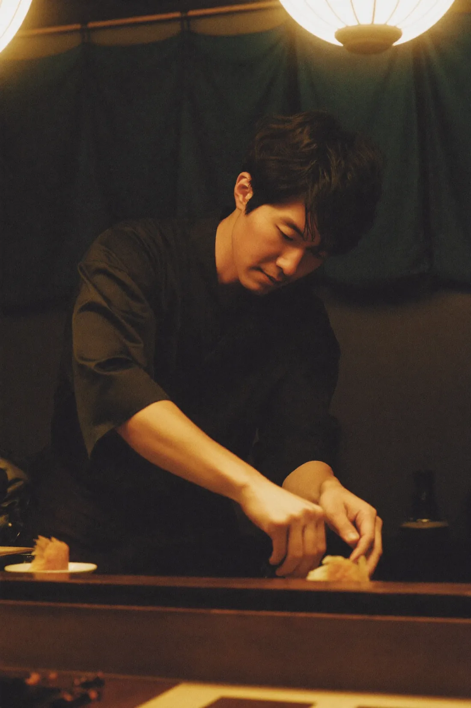

Omakase · by reservation
Tsukimi月見
A tasting menu you read by moonlight.
tonight · waxing gibbous · 84%

the night begins ↓

First course
緋Beetroot, cured in plum
Heirloom beet, sliced to its rings and slow-cured in our own ume vinegar until it glows. Sweet, sour, earthy — the first colour of the night, and the only one the kitchen grows itself.
— house garden beet · three-year plum vinegar

Second course
琥Uni, warm and gold
Sea urchin the colour of a lantern, over sushi rice still warm from the hand. Sweet, then briny, then gone. Eat it the moment it arrives — it will not wait for you.
— Hokkaidō bafun uni · graded today
“We do not set the menu. The moon and the market do — we only listen.”— the kitchen, Tsukimi

Third course
翠Matcha & shiso
A pause in green: matcha whisked to a bright foam, a single shiso leaf picked this morning. The palate resets; the moon reaches the top of the sky.
— Uji first-harvest · house-grown shiso

Fourth course
紫Ume, and gold
The last colour: sour-sweet plum and cassis set into a dome so deep it reads violet, a single fleck of gold leaf for the moon. The night closes the way it opened — quietly.
— Wakayama nanko ume · aged in its own syrup

Moonset · the counter
Eight seats. One seating. Every night the moon is up.
The whole menu happens in front of you, across the counter, in about two hours. We change it with the season and the sky, so no two nights are the same — and neither is the moon.
- Seatings
- One per night, at moonrise. Eight seats at the hinoki counter.
- Reserve
- Bookings open with each new moon, one lunar month ahead.
Request a seat →
※ look into the moon — the rabbit is still pounding.